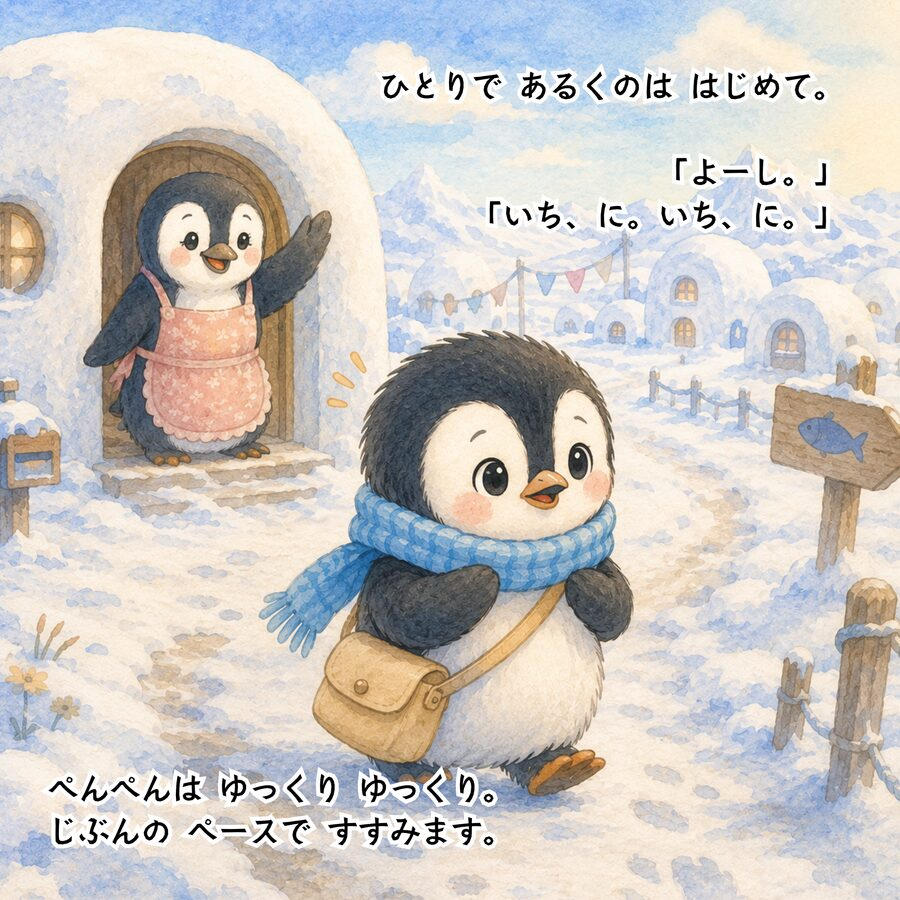
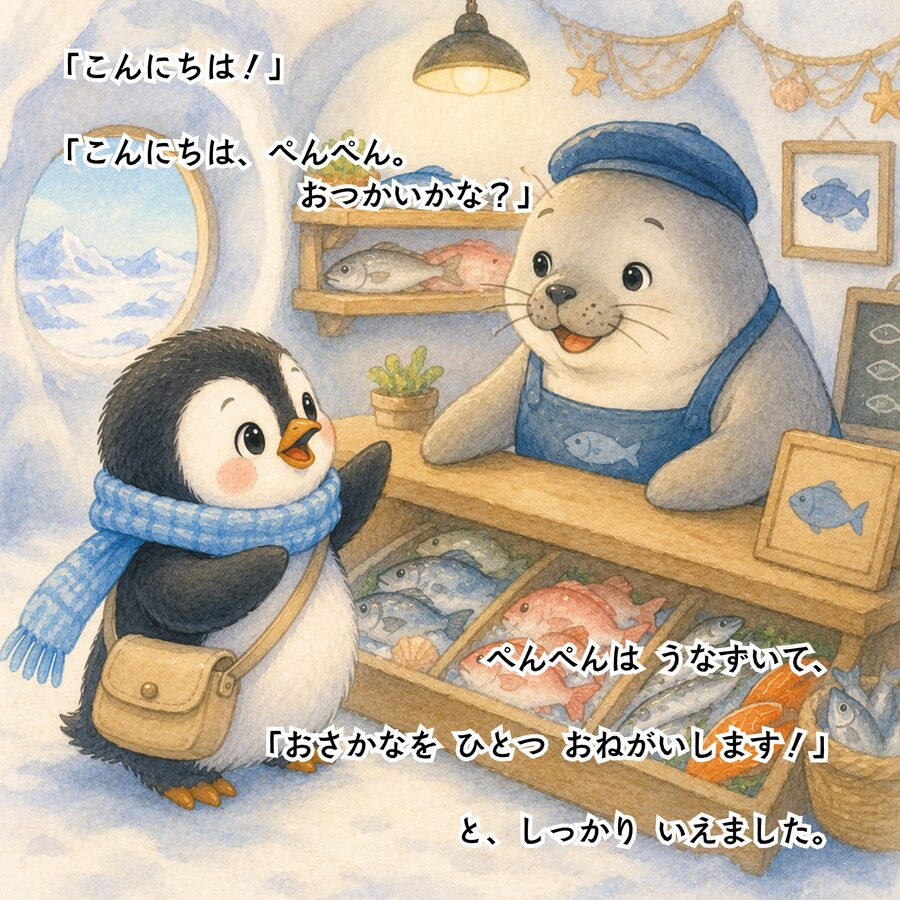
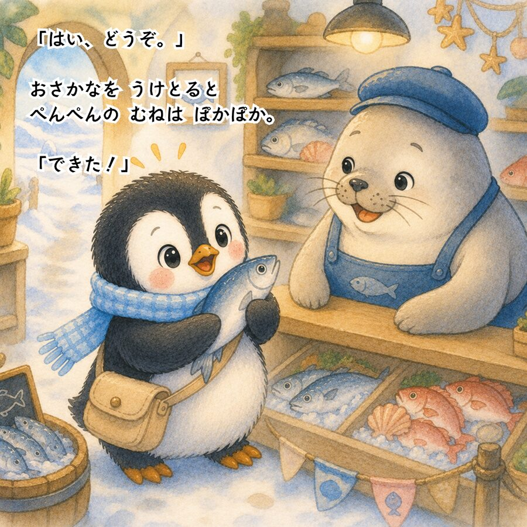

絵心も文才もいらない、完全未経験から始める
AI絵本のはじめ方ガイド ＋コピペで使えるプロンプト
＼ 在庫リスク0で、
あなたの絵本をAmazonに並べる ／

AI×SNSで在宅収入を叶える主婦
みな @mina_ai_fukugyo
こんなお悩みありませんか？
-
😰
スーパーの買い物で値上げにため息。
毎月のやりくりがしんどい… -
😰
「子どもの将来の選択肢を広げたい」でも、
働きに出るまとまった時間はない -
😰
在宅ワークに興味はあるけど、
特別なスキルがないから無理だと思っている
物価は上がるのに、使えるお金は増えない。
変わりたいと願いつつ、忙しさに追われて「何も変わらないまま1年が過ぎる」…
実はこれ、一番もったいない状態なんです。
そのお悩み
「AI絵本販売」
で解決できます！✊
絵もお話もAIにおまかせ。未経験からでも
子どもの寝かしつけ後の30分で1冊仕上げられちゃうんです。
📚 AI絵本、実はこんなに売れてます
実際にAmazonを見てみると、AIで作られた絵本がずらりと並び、
レビューがしっかりついている本もたくさんあります。
📖 とある絵本の例
-
💰
価格 1冊 1,000〜1,500円
-
⭐
レビュー 50件超ついている本も
印刷・在庫・発送はすべてAmazon任せ。自宅に在庫を抱えないから、育児中でも無理なく続けられるボーナスタイムです！競争が激しくなる前に、この波に乗るのが一番賢い選択です。
たった4ステップで、Amazonに並ぶまで🎉
📝 ChatGPTで絵本シナリオを作る
【】3か所を埋めて送るだけで、
1冊分の絵本シナリオが一気に完成します！
アドバイス：
テーマは「友情・勇気・親子愛・自分らしさ」など身近な感情にすると、レビューが伸びやすくなります！
🎨 イラスト生成プロンプトを作る
同じチャットで続けて送るだけ。
「英語なんて書けないよ」という方も、ここはChatGPT任せでOKです✨
「キャラクターを固定して」と指示しないと、ページごとに別キャラになってしまうので要注意です🎨
🖍️ Canvaで絵本に仕上げる
シナリオとイラストがそろったら、Canvaでページを組み立てていきます。
- 1.Canvaで「カスタムサイズ」を選び、Amazon KDP推奨サイズ（21×21cm）で新規作成
- 2.表紙ページを作る（タイトル＋メイン挿絵）
- 3.各ページに挿絵を配置し、その下にシナリオのテキストを置く
- 4.最後のページに「おわり」とあたたかい一言を添える
- 5.全ページが揃ったら、PDF形式（印刷用）でダウンロード
文字は丸ゴシック系フォントでフォントサイズ24pt以上、余白を3割以上確保すると絵本らしい仕上がりになります。
📖 実際に完成した絵本はこちら



Amazon KDPで出品する
PDFができたら、いよいよAmazonへ出品です。
- 1.Amazon KDP（Kindle Direct Publishing）のアカウントを作成
- 2.「ペーパーバック」を選択
- 3.本のタイトル・著者名・カテゴリーを入力
- 4.作ったPDFと表紙画像をアップロード
- 5.価格設定（参考：1,000〜1,500円）のうえ出版申請
最短2〜3日で審査が終わり、
Amazonの商品ページに掲載されます🙌
カテゴリーは「絵本」「3〜6歳向け児童書」などニッチなものを選ぶと
ランキング上位を狙いやすいですよ。
⚠️ でも、正直にお伝えします。
ここまで読んで、「プロンプトが分かったから自分でもできそう！」と思ったかもしれません。
でも実は…
「プロンプトを知っていること」と
「実際に継続して稼げること」は全く別物
なんです。
- 🤔 どんなテーマ・キャラなら売れるの？
- 🤔 表紙やタイトルで選ばれるコツは？
- 🤔 1冊で終わらせず、継続して収入にするには？
ここでつまずいて、諦めてしまう方がいちばん多いんです🥺
私自身、過去に自己流で副業に手を出し、
150万円ものお金を失う
という痛い経験をしています。
「私には才能がないんだ…」とお布団の中で一人泣いた夜は数え切れません。
そこから必死に試行錯誤し、ようやく見つけたのが「AIを賢く活用し、手堅くお家で収入を作るための『実践ノウハウと神テンプレート』」でした。
私と今のあなたの違いは、才能ではありません。
「成果が出る『型』を知っていて、
失敗を避ける方法を知っているかどうか」
だけなんです。
特別なプレゼント
私がこれまでに体験した、
150万円の損失からようやく掴み取った
「寝かしつけ後の30分が
"収入を生む時間"に変わる
【実践マニュアル】」
をこの一冊に詰め込みました。
『AIマネタイズの教科書』

📖 教科書の中身を少しだけご紹介！
- 💎第一章: いま一番始めやすいAIマネタイズ手法
- 💎第二章: ChatGPT収益化プロンプト
- 💎第三章: AIマネタイズ神テンプレート
- 💎第四章: マネタイズのための生成AIツール3選
- 💎第五章: AI×SNSで収益を生むリアル事例
本書では、
「作業効率を劇的に上げる神テンプレート（第三章）」や、
単発の仕事で終わらせないための
「AI×SNSで毎月安定した収益を生むリアル事例（第五章）」など、
自己流では必ずつまずいてしまうポイントを網羅しています。
AIのトレンドは日々進化しています。
今のこの「初心者でも入りやすいボーナスタイム」が
いつまで続くかは分かりません。
だからこそ、
今すぐこのノウハウを受け取って、確実な一歩を踏み出してほしいんです。
まとまった時間がなくても大丈夫。
まずは子どもが寝た後の1時間、一緒に始めてみませんか？🌷
※現在のAI事情に合わせた最新ノウハウのため、期間限定の無料配布となります。予告なく配布を終了する場合がありますので、お早めにお受け取りください。